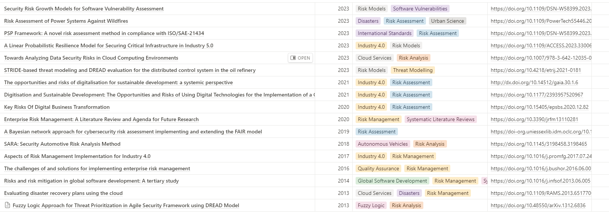
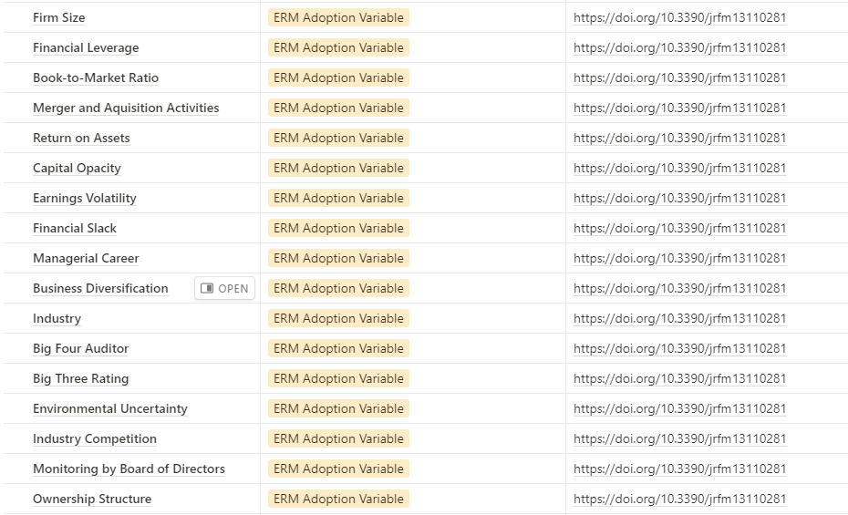
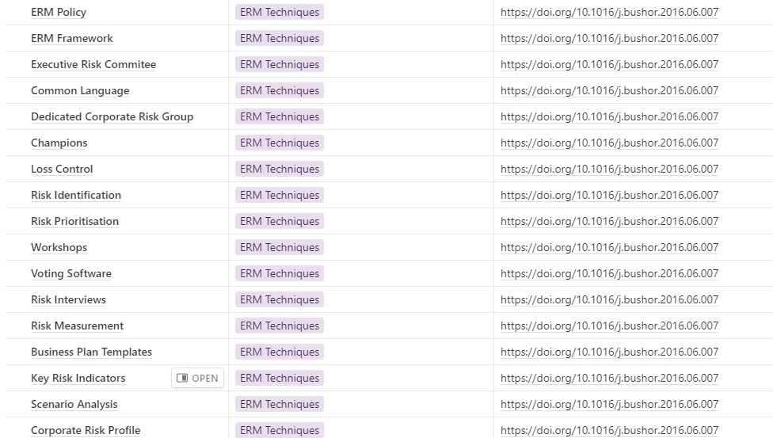
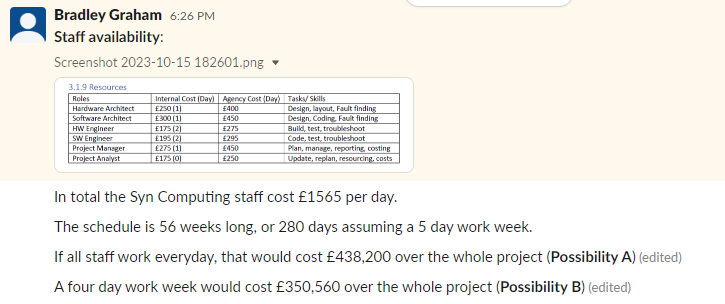
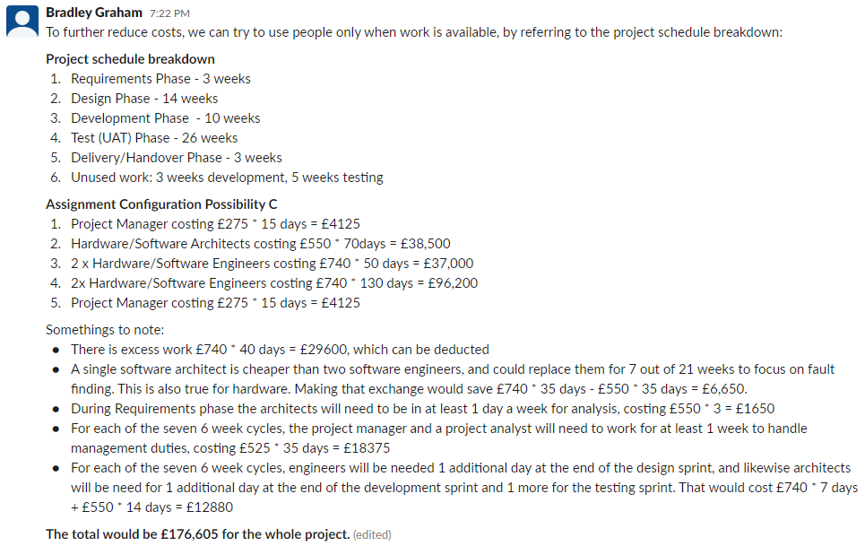
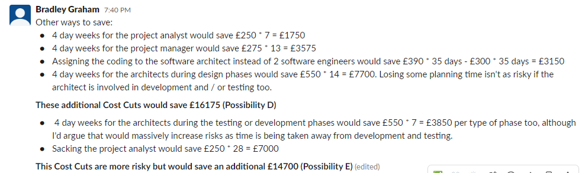
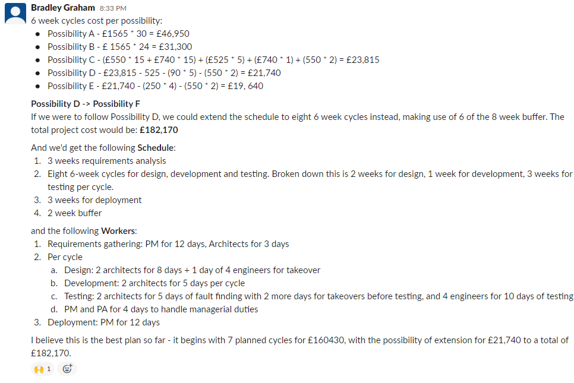

Week 4
Reading
The core readings of the week consisted of Verner et al's 'Risks and Risk Mitigation in Global Software Development' (2014), and Anton & Nucu's 'Enterprise Risk Management: A Literature Review and Agenda for Future Research' which gave a broad overview of risk mitigation.
In relation to Anton & Nucu's SLR; towards the beginning of this course I specifically praised systematic literature reviews for their aid when trying to navigate research. During this module, I gained an additional perspective because I relaised I already have a large directory of articles on risk management stored on Notion. At this point, I believe I would benefit most from tracking the most recent publications on risk mitigations, which provide the most contemporary insights, instead of gaining a broader subject view. Unfortunately, SLR's are not timeless, they are time-locked reviews of research. So now I'm more curious about timeless, (updateable) mediums for research.
I've talked about my interest in model-based reasoning and ontologies in the past, and this new insight, I feel, once again shows me my interest lays with knowledge management.
Example of Risk-Related Paper Archive
I've definitely got a strong interest in knowledge management to complement by interest in project management. So I find risk management itself a really interesting topic too as risks are such a valuable type of knowledge, crucial to the management of projects.
Exaple of Risk-Related Key Ideas Archive
 Group Project
This was my proposal for the project workforce.
   To help with critical decision making, I made sure to create multiple options for our project, tracking tangible quantities and qualities (financial / risk). Depending on the amount of money we can budget for our workforce, we've got different solutions.